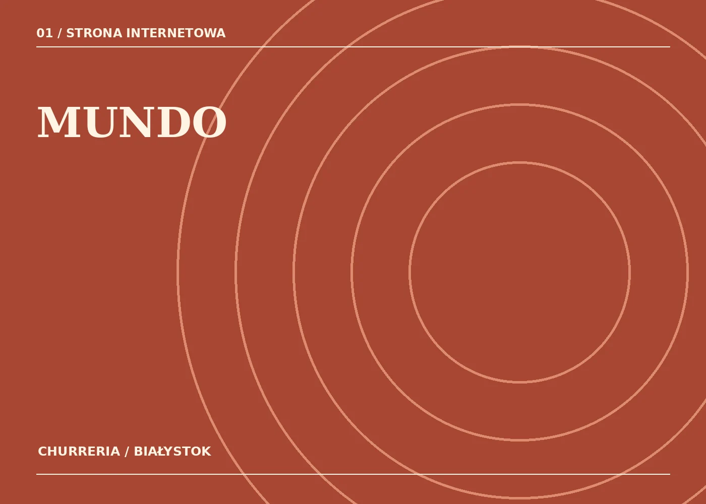
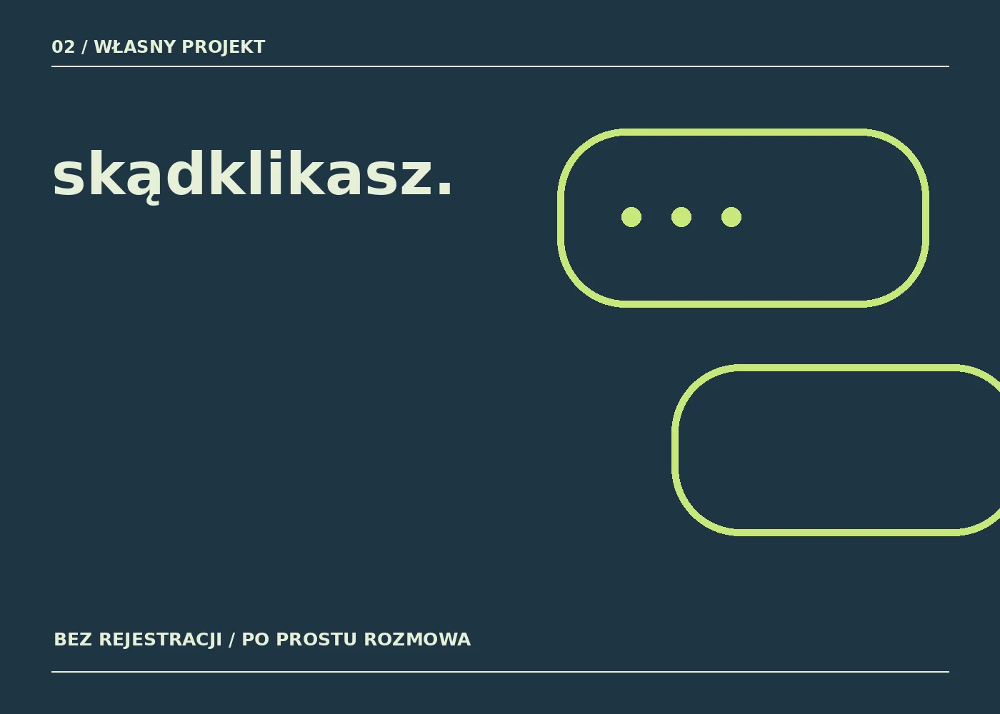

Robię strony.
I ciekawe rzeczy
po drodze.
Projektuję strony internetowe dla małych firm. Po godzinach buduję własne narzędzia i eksperymentuję z AI. Wszystko osobiście — bez agencji, bez pośredników i bez wielkich słów.
 Tak, to naprawdę ja.
Tak, to naprawdę ja.Mniej komplikacji.
Więcej sensu.
Nie sprzedaję wszystkiego wszystkim. Skupiam się na rzeczach, które umiem zrobić sam, od początku do końca.
Strony internetowe
Nowe witryny i odświeżanie istniejących. Szybkie, czytelne, wygodne na telefonie i proste w utrzymaniu.
Narzędzia i automatyzacje
Małe aplikacje, formularze i rozwiązania, które oszczędzają powtarzalną pracę. Także z wykorzystaniem AI.
Treści do internetu
Proste materiały na social media, krótkie filmy i uporządkowanie tego, jak Twoja firma pokazuje się w sieci.
Nie tylko mówię.
Pokazuję.
Są tu gotowe realizacje, dema dla firm i własne produkty. Każdy projekt opisuję zgodnie z jego faktycznym statusem.

Churreria Mundo
Smak miejsca przeniesiony na ekran.

SkądKlikasz
Prosty czat dla ludzi, nie algorytmów.
Wszystkie projekty
Nie jestem agencją.
Jestem Krystian.
Od lat pracuję z technologią i systemami biznesowymi. Lubię, kiedy rzeczy mają sens, działają i nie wymagają od użytkownika instrukcji obsługi.
Teraz tę samą ciekawość przekładam na strony i własne projekty. Czasem powstaje strona dla lokalnego biznesu, a czasem anonimowy czat albo narzędzie do robienia rolek.
Jeśli się dogadamy, to ja będę projektował i budował Twoją stronę. Nie przekazuję rozmowy do działu handlowego.
Bez prezentacji
na 60 slajdów.
Rozmawiamy
Mówisz, czego potrzebujesz. Ja dopytuję o kilka konkretów i proponuję zakres.
Pokazuję pomysł
Ustalamy kierunek, cenę i termin. Widzisz, co powstaje, zanim to opublikujemy.
Uruchamiamy
Sprawdzamy całość na komputerze i telefonie. Pomagam z hostingiem oraz domeną.
Masz pomysł?
Napisz.
Nie potrzebuję od Ciebie briefu na dziesięć stron. Wystarczy kilka zdań o tym, co chcesz zrobić albo poprawić. Odpowiem osobiście.
Wolisz krótką wiadomość? Znajdziesz mnie też na TikToku ↗